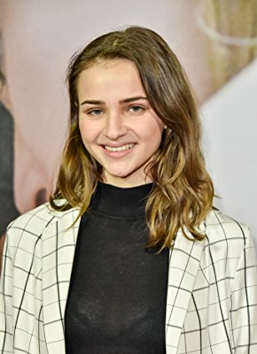
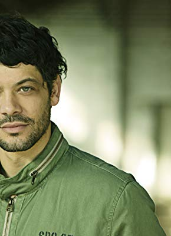

#9390 Luna
 gesehen am 30.08.2018
gesehen am 30.08.2018


 IMDB-Wertung: 5.5 / 10
IMDB-Wertung: 5.5 / 10  Metascore: 0
Metascore: 0 
Als die Familie der 17-Jährigen Luna bei einem gemeinsamen Urlaub in den Bergen kaltblütig umgebracht wird, entkommt sie selbst den Killern nur knapp. Auf der Flucht findet sie heraus, dass ihr Vater ein russischer Geheimagent war, dessen Doppelleben nicht nur ihn, sondern auch seine Familie das Leben kostete. Als einzige Zeugin ist Luna in großer Gefahr und gerät ins Fadenkreuz der Geheimdienste. Der beste Freund ihres Vaters, Ex-Agent Hamid, will sie ins sichere Ausland schmuggeln, doch Luna lehnt ab. Sie will herausfinden, warum ihre Familie sterben musste und die Mörder zur Verantwortung ziehen. Das ungleiche Duo macht sich auf die Suche nach der Wahrheit.
Jahr: 2017
Dauer: 91 Minuten
FSK: 12
Land: Deutschland Studio: UFATonspuren:
Untertitel:
Auflösung: 1080p (1920x808) Größe: 6195 MB
Genre: Thriller
Regisseur: Khaled Kaissar
Drehbuch: Ali Zojaji, Ulrike Schölles, Alexander Costea
Soundtrack: Heiko Maile, Christoph Zirngibl
Darsteller:
-  Lisa Vicari als Luna
 Branko Tomovic als Victor
Branko Tomovic als Victor Rainer Bock als Behringer
Rainer Bock als Behringer- Bibiana Beglau als Julia
 Benjamin Sadler als Jakob
Benjamin Sadler als Jakob Annika Blendl als Nadine
Annika Blendl als Nadine Alexander Beyer als Hartmann
Alexander Beyer als Hartmann- Katharina Stark als Charlie
-  Carlo Ljubek als Hamid
- Genija Rykova als Kathrin
- Olivia Christmann als Maia
- Frederik Costea als Luis
- Luise Deschauer als Blinde Frau
- Moritz Fischer als Piotr
- Laura Graser als Leni
- Tamara Graser als Leni
- Eugen Knecht als Andrej
- Rafael Koussouris als Paul
- Johannes Meier als Ludger
- Roland Schreglmann als BND-Hacker
- Nora Schulte als Angestellte
- Adrian Spielbauer als Junger Mann
- Roland von Kummant als Roman
- Urs Fabian Winiger als Paul, Kollege von Polizist Hartmann
Datei: X:\2017(G-M)\Luna (2017, FSK12, 1920x808).mkv seit 30.08.2018
Festplatte: HD 2017(A-Z)-2018(A-F)
 Es gibt insgesamt 148 Filme in der Gruppe '2017(G-M)'
Es gibt insgesamt 148 Filme in der Gruppe '2017(G-M)'